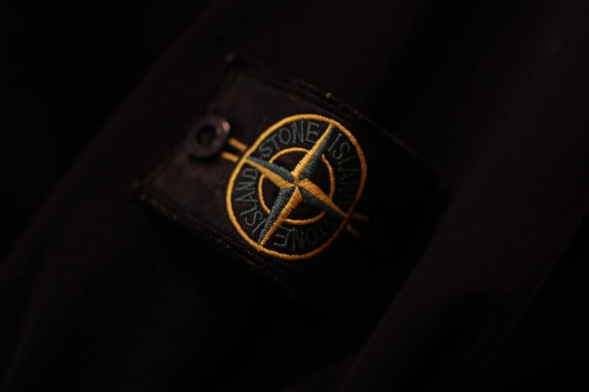
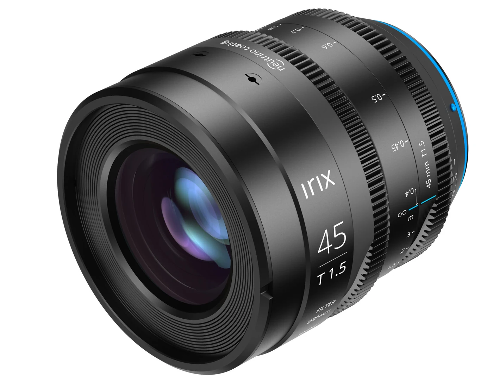

Mein IRIX 45mm T1.5 — ein cineastischer Look

Ich finde es spannend, mit verschiedenen Objektiven zu fotografieren und herauszufinden, welche Bilder damit möglich sind. Eines meiner Objektive ist das IRIX 45mm T1.5. Besonders gefällt mir, dass ich damit Bilder mit einem cineastischen Look machen kann.

Was ist das Besondere daran?
Das IRIX hat eine grosse Blendenöffnung von T1.5. Dadurch kann viel Licht durch das Objektiv gelangen. Das ist vor allem praktisch, wenn es etwas dunkler ist.
Was mir besonders gefällt, ist der unscharfe Hintergrund. Ich kann zum Beispiel ein Gesicht scharf aufnehmen, während der Hintergrund weich und verschwommen aussieht. Dadurch fällt der Blick direkt auf die Person und das Bild wirkt wie eine Szene aus einem Film.
Was kann ich damit fotografieren?
Ich möchte das Objektiv vor allem für Porträts und Detailaufnahmen verwenden. Bei Porträts kann ich die Augen scharf stellen und den Hintergrund unscharf machen.
Auch für cineastische Aufnahmen finde ich es interessant. Mit dem richtigen Licht und einer passenden Perspektive kann man Bilder machen, die eine besondere Stimmung haben.
Scharf oder unscharf?
Beim Fotografieren mit T1.5 muss ich genau fokussieren. Denn wenn die Blende so weit geöffnet ist, ist nur ein kleiner Bereich des Bildes wirklich scharf.
Das braucht etwas Übung, aber genau das macht es für mich spannend. Ich kann ausprobieren, was scharf sein soll und wie ich den Hintergrund gestalten möchte.
Mein Fazit
Das IRIX 45mm T1.5 gibt mir viele Möglichkeiten, kreativ zu sein und meinen eigenen Stil zu finden. Besonders der unscharfe Hintergrund und der cineastische Look gefallen mir.
Ich freue mich darauf, noch viele verschiedene Motive damit auszuprobieren und zu sehen, welche Ergebnisse ich erzielen kann. Denn mit dem richtigen Objektiv kann selbst ein einfacher Moment zu einem besonderen Bild werden.